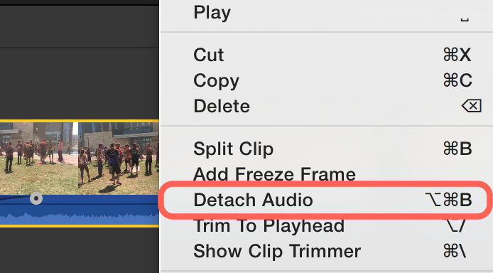
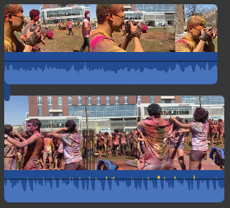

Introduction
iMovie is video editing software created by Apple; it can be found on practically all Mac computers. iMovie collects and organizes footage, allows users to edit the footage in a variety of ways. From there, the final video can be exported and saved.
Prerequisites and Requirements
Copyright and Fair Use
A common problem when creating mulimedia presentations, such as those you will make with iMovie, is obtaining footage, audio and images to work with. Many times we casually use video clips, audio files, and images without thinking or realizing they are copyrighted. Copyright law protects these files, and generally prevents us from using them in our own projects. The following information is meant to help inform you about good practices regarding Fair Use of multimedia, enable you to create copyright-conscious works, which will stand up to scrutiny.
Gathering Media
The best way to obtain media is to produce it yourself! When you produce your own footage, sound, and images, you retain intellectual ownership, and thus are allowed to use them any way you want. Of course it is not always practical or deasible to create all of your media from scratch. There are standards of practie that allow you to use media created by others.
Fair Use
The Fair Use Doctrine allows for the usage of normally copyrighted materials in certain circumstances. Fair Use suspends copyright law, allowing and encouraging the use of copyrighted materials in culturally and socially beneficial applications such as education, learning and scholarship. The application of the Fair Use doctrine is not black and white, and is left mostly to your own discretion. To access a more comprehensive description of the Fair Use Doctrine and examples of its usage please visit the copyright section of the library's website: library.wisc.edu/help/copyright.
CreativeCommons Licenses
CreativeCommons is a nonprofit organization that works to legally extend the use of copyrighted information. CreativeCommons provides legal tools, in the form of CreativeCommons licenses, that allow a creator to express their desire for others to be allowed to reuse their work. Basically the creator is saying that others are permitted to use their work without any direction authorization. This is meant to encourage the creative process and foster the idea of the internet as a collectively creative community. For more information on the CreativeCommons project visit their website at creativecommons.org/about.
Where to Find Content?
There are many sites on the internet that offer CreativeCommons content. We have selected a few of the major sites, and outlined how to use them below.
-
CreativeCommons Search Engine: The CreativeCommons website has an all inclusive seach engine, which searches a variety of multimedia sites for content licensed for use under CreativeCommons. To use the search engine simply visit search.creativecommons.org.
-
Flickr Image Commons: Flickr is a widely used photo storage and distribution website. Flickr allows users to designate their content as being for CreativeCommons usage. Go to flickr.com/search/commons/ to search for the images
-
Jamendo Music Commons: All music avaliable from jamendo.com/en/creativecommons falls under some sort of CreativeCommons license. Artists allow for free downloads as a means to promote their music.
iMovie Interface
To open iMovie, go ahead to your launchpad or application folder and click on the purple iMovie icon.
Creating a New Project
Once iMovie has opened, "New Movie" then "No Theme". Then name your project. For our example project, we will name it "Holi". We will briefly mention how to use iMovie to make a trailer at the end of this class. If you are interested in other pre-designed themes, we also encourage you to explore more after this class. This class will focus on how to teach you basic video editing skills without using these pre-designed themes.
iMovie Workspace
iMovie's workspace consists of five major areas, labeled below.
-
Content Library: This library contains general content you can use including audio, transitions, titles, and background.
Sound Effects and Transitions
-
Event Library: This library stores all video clips, photos, audio clips, and other media that you imported in any of the projects in the specfied event.
-
Adjustment Menu: This menu brings up options you can use to modify and enhance your video clips, audio clips, images, text, and other objects in your projects.
-
Preview Screen: Window where you can preview your footage.
-
Timeline (Project Area): This is the area where the editing happens. You can drag, split, cut, and arrange your footage to create the final movie output here.
Gathering Media
There are a variety of ways to add media such as pictures, videos, and music to your project. In this section we will learn how to import files, and record video to add to our project.
Importing Video Files
If you have digital video or still images on your computer's hard drive, or on an external hard drive, you can easily import them into your iMovie project.
-
Choose the project you just created under Project Media area, and click "Import Media".
-
Navigate to iMovie class files. Hold shift and select all excercise videos, images and audio files.
-
Click "Import Selected".
This may take a minute. Once the files have imported, you will see that each video appears as it's own individual tile in the event library.
Recording Video
If your laptop or computer has a built-in camera, it can connect to iMovie and record videos.
-
Choose the project you just created under Project Media area, right click and select "Import Media".
-
Under cameras, choose FaceTime HD Camera.
-
Press the record button (red dot) to record directly from your computer's camera. You will now be able to record a video and import it directly into your event library.
Video Skimming and Playback
Before editing the video, you may need a little bit of time to get familar with all the media you have. iMovie has a very helpful video playback system, with multiple ways of preview your footage.
-
Hover your mouse from left to right over a clip to preview it. If you want to listen to the audio while you skim through your video clips, go to View > Audio Skimming.
-
Press the spacebar or play button under the preview screen to play back video in real time, press again to pause.
Organizing Footage
There are multiple ways to organize your videos. This can be helpful if you have a lot of media files to deal with.
The gear icon in the top-right corner of the media area can adjust the appearace of thumbnails for each of your video clips. If you have a plethora of footage, it may be good to derease the clip size and change the zoom level.
Another key task in organizing footage is to filter out unwanted clips. You can "Favorite" or "Reject" a clip by selecting it, right-clicking, then selecting "Favorite" or "Reject".
-
Favorite: This will highlight your clip with a green bar in the library.
-
Reject: Will hightlight your clip with a red bar and by default hide your clips from the library.
-
Unrate: If the selected clip has been highlighted, clicking on this option will remove the highlight.
Now you can filter you clips by showing only favorite, rejected, or all clips. Pretty neat, eh?
Basic Editing
In order to start building our video, we need to place video clips into the timeline of our project. Click on a clip to select it, then drag your selection to the empty timeline (project area) below.
You may also select only a portion of a clip by clicking and dragging on the clip in the media area.
Finally, you can zoom in/out of timeline by adjust the slider on the top-right corner of the timeline.
Trimming a Clip
After adding a clip to the timeline, you may want to trim either the beginning or end of the clip.
-
In the project area, select your clip, then move your mouse to the left or right edge of the clip. Your cursor should change, indicating you are about to trim a clip.
-
Click and drag to whatever position you like to trim the clip.
Practice the trimming technique on another video clip in the project library. You should now have a multiple selections from the few clips in your project.
Spliting a Clip
-
Place the playhead at the location where you want to split the clip.
-
Right-click, then choose "Split Clip" from the menu that appears.
Image Editing
In iMove, editing images follows a similar process to editing video clips.
Simply select and drag the file into the timeline. iMovie by default sets the image duration to 4 seconds. You can change the duration in timeline by hovering your mouse to the right or left edge of the image and dragging to whatever duration you want. This is essentially similar to how you trim a video clip.
Audio Editing
Many beginners in filmmaking often make a common mistake: omit the importance of audio quality. In fact, audio can sometimes be even more important than video because people are more likely to endure a bad-quality video than bad-quality audio.
iMovie includes some basic audio editing tools to help improve audio. Look at your timeline, you will notice there is a blue waveform section under each video clip. This waveform displays the audio attached to the video clip. There are a few functions you can perform here:
-
To change the volume of the audio, hover your mouse on the horizontal black line, and drag up or down to increase/decrease volume.
-
Hover your mouse over the audio clip, and you will notice a small blue circle near the beginning and end of the waveform. These circles control the fade-in/fade-out effects. Drag the circle right or left to create fade.
-
You can also detach an audio clip by right-clicking on a clip and choosing "Detach Audio". Your video and audio clips are now separate entities, and will no longer move around the timeline in tandem.

Detach audio gives you more freedom to move around audio.
Advanced Editing Tools
Adjustment Menu
The adjustment menu (found in the upper right corner) is where you can fine tune your video, add effects, color correct, and change all sorts of properties. Many of the tools in the adjustment menu may sound abstract, but fear not. The best way to learn how to use the more advanced tools is to play with htem and try out different options.
Below is a diagram with the name of each tool found in the adjustment menu.
Auto Correct
Auto Correct automatically improve the video and audio quality of selected clips.
Before and after Auto Correct
Because our original clip is a bit desaturated, iMovie adds will automatically add more contrast to the and color to the footage. To gain more control of your clip, avoid using auto correct.
Color Balance
In iMovie, the color balance tools have four main functions.
-
Auto: Automatically balances the color of your video.
-
Match Color: Adjust the color of this clip to mach the colors of another clip. This is helpful if you have color corrected one clip in your timeline, and which to apply those color corrections to other clips as well.
-
White Balance: Allows you to select a pure white color within your image. Whatever color you selected, iMovie will set it as pure white, and then adjust all other colors accordingly.
-
Skin Tone Balance: Allows you to select skin tones in your footage, then properly balances their colors.
Color Correction
Color correction allows you to change the color scheme, brightness, saturation and color temperature of your footage.
-
Shadows: Adjust to make the dark area of the clip brighter or darker.
-
Midtone: Adjust to make the entire clip brighter or darker.
-
Highlight: Adjust to make the brightest area of the clip brighter or darker.
-
Contrast: Adjust to make the clip to have more or less contrast. Contrast is the scale of difference between black and white.
-
Saturation: Adjust to make the clip more or less colorful.
-
Color Temperature: Adjust to make the image colder (blue) or warmer (yellow).
Cropping
Cropping an image allows you to get a better composition of your clip. Select "Crop to Fill", adjust and drag the highlighted area to the composition you want, click check button on the right top corner to finish cropping.
Make sure to not crop too much because your footage is going to lose its high resolution, especially if you are using a low resolution camera.
Another feature under the cropping tool is the Ken Burns effect. This effect will apply a zooming and panning motion to your picture/video throughout the duration of the clip, depending on where you set the beginning and endpoints.
Ken Burns was the creator of many famous PBS documentaries. He added this animation to still photos to add interest and draw the viewer's attention. Hence, the feature has been named after him.
-
Select a photo or a clip in the project area.
-
Under crop tool, select "Ken Burns".
-
There are two boxes: a start box and an end box, each labeled in he lower left corner of each frame. The start box is where the animation of the picture will begin. Move and resize the box until it covers the area where you would like the animation to begin.
Notice the arrow in the center of the Start box that is indicating the direction in which the animation will occur.
-
Next, click inside the end box. This is where the animation of the photo will end. Adjust the size and position of the ending box where you would like the animation to finish.
-
Preview your effect with the play button in the preview screen. Click on the check button on the right-top corner to finish the effect.
One final feature of the cropping sectin is the ability to rotate a video clip or still image. You can achieve this by clicking one of the rotate buttons found at the top.
Stablization
If you handheld taking videos, you often find the footage very shaky and difficult to watch. Click on the shaky camera icon under adjustment menu, check stabilize shaky video and adjust the amount of stabilization. iMovie will analyze and stabilize the video automatically. However, remember the more you want to stablize the video, the more iMovie may crop the clip to cover the shakiness.
Volume
Select the speaker icon to adjust the volume of an audio.
Noise Reducation and Equalizer
-
Noise reduction allows you to reduce background noise in your audio.
-
Equalizer allows you to edit specific frequencies in your audio, and adjust their volumes.
Speed
freeze frame
slow motion
fast motion
The time meter icon allows you to change the speed of the selected clip. Under Speed, you can choose Normal, Fast, Slow, Freeze Frame and Custom speed. Try each option and see how it works.
Once you changed the speed of a particular clip, you will notice that there might be a turtle, rabbit or hand icon appearing on the middle of the clip. Also, there will be a bar appearing on the top of the clip, indicating that this clip has been sped up or slowed down.
There is another way to adjust the speed. on the left edge of the top bar, you will see a small circle. Click and drag to speed up or slow down the clip.
Enable "Smooth" to smooth speed transition. "Reverse" plays the clip from the end to beginning.
After you change the speed of the clip, you may notice your audio becomes distorted. If you fast forward the footage, the audio may sound extremely high pitched. Enable "Preserve Pitch" to avoid this.
Clip Filter and Audio Effects
The icon with three circles allows you to apply a variety of filters and audio effects. Play with different filters and make your movie more creative!
Clip Information
Click on the information icon to check details of the clip including, name, date, time and duration.
Video Overlay
Video Overley is a useful tool for presenting multiple clips in tandem with one another on the screen. It allows you to have one piece of footage rest atop another, or set two pieces of footage to display in a split screen.
-
Click and drage to place one video clip on top of another.

-
An additional Overlay Tool should appear near the adjustment menu. Select the Overlay Tool.
-
Choose "Side by Side" style or "Picture in Picture" style.
Difference between Picture in Picture style and Side by Side style
Content Library: Music, Titles, Transitions
As introduced earlier in the manual, the content library contains audio, titles, transitions, and backgrounds you can add to your project.
Adding Audio
iMovie connects with your iTunes and GarageBand. Therefore, you can add music from both sources.
-
Click on the music file and drag it over the clip in which you want to play over.
-
The music should have a pin attaching it to the clip. Any time you move the movie clip, the music file will move accordingly.
Background Music
You can also add music to the background of your movie project without attaching it to a single clip. This way, you can rearrange your clips without having to worry about the audio moving as well.
-
Click on the music file in your media window and drag it to the background music area at the bottom of your project area.
-
The music should appear as a bar that is not pinned to any particular clip. Your music should not move when you move around movie clips.
Sound Effects
iMovie contains a large library of sound effects that are free to use in your projects.
-
To preview the sound, click on the play button that appears to the left of the audio clip when you hover over the clip.
-
Click and drag a sound file over any movie clip to pin the sound effect to that clip.
Adding Voiceovers
Most newer Mac computers come with built in microphones. You can use this microphone, or an external microphone, to capture your voice and use it in your video project.
-
Click on the microphone icon on the left-bottom of your preview screen.
-
Speak in your normal voice into the mic, check if the sound level is in between the green area. Adjust the level accordingly.
-
Press record button to start recording, and press stop when you finished.
Adding Titles
Under the titles menu, there are multiple title options. Hover your mouse over them to take a preview of the title effect. Skim through the effects and choose one you like.
When placing titles, you can either place them on top of an existing video clip, or they can be placed as standalone clips. If a title is placed as a standalone clip, it will appear with a black background.
To place a title over black background, drop the title before or in between video clips. To place it over the video clip, drag it on top of the clip.
To adjust the titles, double click on the area that says "Type Text Here" to activate text editing menu.
You can adjust basic text features such as font, font size, text alignment, color under this menu.
Adding Transitions
Previewing transitions is similar to previewing titles. Hover your mouse to get a preview of each transition. Skim through the transition effects and choose one you like.
Click and drag a transition, such as cross dissolve, between two clips. You will now have a half-second transition between the two clips.
To adjust the transition duration, double click on the transition icon, and change the duration in the pop-up menu.
Movie Trailers
iMovie includes a number of templates you can use to create movie trailers, with themes that range from adventure, to documentary, to romance, to friendship to drama. Each template lets you customize screen text such as the movie title and credits, and add clips from your own videos to build a visually appealing trailer. Each templates also comes with a musical score that matches the theme of the trailer.
Movie Trailers are designed to be complete projects in their own right, but you can convert any trailer to a project, which you can then edit just as you would any other video.
Creating a Trailer
-
Click on the plus button on the top left corner, and choose "Trailer".
-
Select a trailer theme from the window that appears, then click "Create". Each theme has a sample film, click on it to preview the film.
You can't switch templates once you begin creating your project because the required elements from one template won't fit with a different template. If you want to use a different template for your project, you need to create a new trailer from the beginning.
-
Type a name for the trailer project and click OK.
A tabbed interface appears. Enter information about your movie in the Outline Tab and add video to your trailer in the Storyboard and Shot List tabs.
Using the Storyboard
The storyboard includes text bars at the top (and at other intervals) that let you edit onscreen text. There are also wells with placeholder imagery to which you add video clips to build your project.
The text bars and wells are arranged in the order in which the elements appear in your trailer, but you can edit or fill them in any order you like.
-
To edit any onscreen text, click the words in a text bar, and edit the text.
-
To add video, select a clip and drag it to the placeholder well
The video you select should conform to the style of the shot illustrated by the placeholder image. For example, if the active placeholder shows a two shot, you should add a two shot into the placeholder.
-
To delete a clip, select it and press delete.
Saving and Exporting
You have successfully created a project in iMovie! It may be short, but hopefully you are now more familiar with how to use iMovie to make your own videos. Before you exit iMovie, take a look at some of the options you have for sharing your video. You will need to export your video in order to upload it, or send it to other people.
-
Click the share icon on the top right corner of iMovie.
Notice that you can even export your video to YouTube and iTunes! These options requires you to link your account with iMovie.
You can choose File if you want to export a QuickTime movie optimized for iPod, iPhone, Apple TV, computer viewing, or Mac.
-
Select "File" from the options given.
-
Select the quality you wish to export. For best quality, choose Best (ProRes) and Better Quality. Notice the file size will be very large. For smaller file size, choose High quality.
-
Make sure "Add to Theatre" is checked, and click "Next..."
-
Choose the destination where you will save your movie file, and click save.
Your project will be rendered and saved as a .mp4 file. to the destination you specified.
Be careful to always leave time for exporting, the process may take over an hour for a large file. Don't wait until five minutes before your project is due to export your movie.
After you successfully exporting your movie, you will recieve a confirmation message.
You don't need to worry about saving the project file. iMovie automatically saves it for your. Unless you delete it, you project will be accessible every time you open iMovie. Keep in mind, the iMovie project file is only readable in iMovie and can't be played with video player.